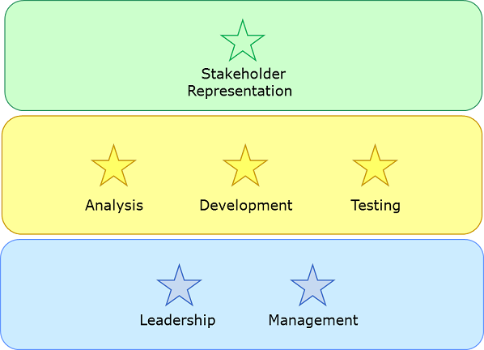

Essence Kernel
-
-
Introduction
-
What’s in the Kernel?
-
Organizing the Kernel
-
Alphas: The Things to Work With
-
Activity Spaces: The Things to Do
-
Competencies: The Abilities Needed
-
Competency level 1 - Assists
-
Competency level 2 - Applies
-
Competency level 3 - Masters
-
Competency level 4 - Adapts
-
Competency level 5 - Innovates
-
Understanding the competency levels
-
References
-
Recommended reading
The Essence Kernel is a stripped-down, light-weight set of definitions that captures the essence of effective, scalable software engineering in a practice independent way.
Introduction
The focus of the kernel is to define a common basis for the definition of software development practices, one that allows them to be defined and applied independently. The practices can then be mixed and matched to create specific software engineering methods tailored to the specific needs of a specific software engineering community, project, team or organization.
The kernel has many benefits including:
- It allows you to apply as few or as many practices as you like.
- It allows you to easily capture your current practices in a reusable and extendable way.
- It allows you to evaluate your current practices against a technique neutral control framework.
- It allows you to align and compare your on-going work and methods to a common, technique neutral framework, and then to complement it with any missing critical practices or process elements.
- It allows you to start with a minimal method adding practices as the endeavor progresses and when you need them.
What’s in the Kernel?
The kernel is described using a small subset of the Kernel Language. It is organized into three areas of concern, each containing a small number of:
-
Alphas – representations of the essential things to work with. The Alphas provide descriptions of the kind of things that a team will manage, produce, and use in the process of developing, maintaining and supporting good software. They also act as the anchor for any additional sub-alphas and work products required by the software engineering practices.
-
Activity Spaces - representations of the essential things to do. The Activity Spaces provide descriptions of the challenges a team faces when developing, maintaining and supporting software systems, and the kinds of things that the team will do to meet them.
-
Competencies - representations of the essential competencies required by software engineering practices.
To maintain its practice independence the kernel does not include any instances of the other language elements such as work products or activities. These only make sense within the context of a specific practice.
The best way to get an overview of the kernel as a whole is to look at the full set of Alphas and Activity Spaces and how they are related.
Organizing the Kernel
The Kernel is organized into three discrete areas of concern, each focusing on a specific aspect of software engineering. As shown in the figure below, these are:
-
Customer – This area of concern contains everything to do with the actual use and exploitation of the software system to be produced.
-
Solution – This area of concern contains everything to do the specification and development of the software system.
-
Endeavor – This area of concern contains everything to do with the team, and the way that they approach their work.
Throughout the diagrams in the body of the kernel specification, the three areas of concern are distinguished with different color codes where green stands for customer, yellow for solution, and blue for endeavor. The colors will facilitate the understanding and tracking of which area of concern owns which Alphas and Activity Spaces.
Alphas: The Things to Work With
The kernel Alphas 1) capture the key concepts involved in software engineering, 2) allow the progress and health of any software engineering endeavor to be tracked and assessed, and 3) provide the common ground for the definition of software engineering methods and practices. The Alphas, their relationships and their owning areas of concern are shown in the following figure:
In the
customer area of concern the team needs to understand the stakeholders and the opportunity to be addressed:
-
Opportunity: The set of circumstances that makes it appropriate to develop or change a software system. The opportunity articulates the reason for the creation of the new, or changed, software system. It represents the team’s shared understanding of the stakeholders’ needs, and helps shape the requirements for the new software system by providing justification for its development.
-
Stakeholders: The people, groups, or organizations who affect or are affected by a software system. The stakeholders provide the opportunity and are the source of the requirements and funding for the software system. They must be involved throughout the software engineering endeavor to support the team and ensure that an acceptable software system is produced.
In the
solution area of concern the team needs to establish a shared understanding of the requirements, and implement, build, test, deploy and support a software system that fulfills them:
-
Requirements: What the software system must do to address the opportunity and satisfy the stakeholders. It is important to discover what is needed from the software system, share this understanding among the stakeholders and the team members, and use it to drive the development and testing of the new system.
-
Software System: A system made up of software, hardware, and data that provides its primary value by the execution of the software. The primary product of any software engineering endeavor, a software system can be part of a larger software, hardware or business solution.
In the
endeavor area of concern the team and its way-of-working have to be formed, and the work has to be done:
-
Work: Activity involving mental or physical effort done in order to achieve a result. In the context of software engineering, work is everything that the team does to meet the goals of producing a software system matching the requirements, and addressing the opportunity, presented by the customer. The work is guided by the practices that make up the team’s way-of-working.
-
Team: The group of people actively engaged in the development, maintenance, delivery and support of a specific software system. The team plans and performs the work needed to update and change the software system.
-
Way of Working: The tailored set of practices and tools used by a team to guide and support their work. The team evolves their way of working alongside their understanding of their mission and their working environment. As their work proceeds they continually reflect on their way of working and adapt it as necessary to their current context.
Activity Spaces: The Things to Do
The kernel also provides a set of activity spaces that complement the Alphas to provide an activity based view of software engineering.
In the
customer area of concern the team has to understand the opportunity, and support and involve the stakeholders:
-
Explore Possibilities: Explore the possibilities presented by the creation of a new or improved software system. This includes the analysis of the opportunity to be addressed and the identification of the stakeholders.
-
Involve the Stakeholders: Involve the stakeholders in the day-to-day activities of the team to ensure that the right results are produced. This includes identifying and working with the stakeholder representatives to progress the opportunity.
-
Ensure Stakeholder Satisfaction: Share the results of the development work with the stakeholders to gain their acceptance of the system produced and verify that the opportunity has been successfully addressed.
-
Use the System: Use the system in a live environment to benefit the stakeholders.
In the
solution area of concern the team has to develop an appropriate solution to exploit the opportunity and satisfy the stakeholders:
-
Understand the Requirements: Establish a shared understanding of what the system to be produced must do.
-
Shape the System: Shape the system so that it is easy to develop, change and maintain, and can cope with current and expected future demands. This includes the overall design and architecting of the system to be produced.
-
Implement the System: Build a system by implementing, testing and integrating one or more system elements. This includes bug fixing and unit testing
-
Test the System: Verify that the system produced meets the stakeholders’ requirements.
-
Deploy the System: Take the tested system and make it available for use outside the development team.
-
Operate the System: Support the use of the software system in the live environment.
In the
endeavor area of concern the team has to be formed and progress the work in-line with the agreed way-of-working:
-
Prepare to do the Work: Set up the team and its working environment. Understand and commit to completing the work.
-
Coordinate Activity: Co-ordinate and direct the team’s work. This includes all on-going planning and re-planning of the work, and adding any additional resources needed to complete the formation of the team.
-
Support the Team: Help the team members to help themselves, collaborate and improve their way of working.
-
Track Progress: Measure and assess the progress made by the team.
-
Stop the Work: Shut-down the software engineering endeavor and the handover of the team’s responsibilities.
Competencies: The Abilities Needed
The kernel also provides a set of competencies that complement the Alphas and Activity Spaces to provide a view of the key competencies needed to do software engineering.

In the
customer area of concern the team has to be able to demonstrate a clear understanding of the business and technical aspects of their chosen domain and have the ability to accurately reflect the views of their stakeholders. This requires the following competencies to be available to the team:
-
Stakeholder Representation: This competency encapsulates the ability to gather, communicate, and balance the needs of other stakeholders, and accurately represent their views.
In the
solution area of concern the team has to be able to capture and analyze the requirements, and build and operate a software system that fulfils them. This requires the following competencies to be available to the team:
-
Analysis: This competency encapsulates the ability to understand opportunities and their related stakeholder needs, and transform them into an agreed and consistent set of requirements.
-
Development: This competency encapsulates the ability to design and program effective software systems following the standards and norms agreed by the team.
-
Testing: This competency encapsulates the ability to test a system, verifying that it is usable and that it meets the requirements.
In the
endeavor area of concern the team has to be able to organize itself and manage its work load. This requires the following competencies to be available to the team:
-
Leadership: This competency enables a person to inspire and motivate a group of people to achieve a successful conclusion to their work and to meet their objectives.
-
Management: This competency encapsulates the ability to coordinate, plan and track the work done by a team.
Each competency has five levels of achievement. These are standard across all of the kernel competencies, and are described below.
Competency level 1 – Assists
Demonstrates a basic understanding of the concepts and can follow instructions.
The following describe the traits of an individual on this level of competency:
- Understands and conducts his or her self in a professional manner.
- Is able to correctly respond to basic questions within his or her domain.
- Is able to perform most basic functions within the domain.
- Can follow instructions and complete basic tasks.
Competency level 2 – Applies
Able to apply the concepts in simple contexts by routinely applying the experience gained so far.
The following describe the traits of an individual on this level of competency:
- Is able to collaborate with others within the Team
- Is able to satisfy routine demands and simple work requirements.
- Can handle simple challenges with confidence.
- Can handle simple work requirements but needs help in handling any complications or difficulties.
- Is able to reason about the context and draw sensible conclusions.
Competency level 3 – Masters
Able to apply the concepts in most contexts and has the experience to work without supervision.
The following describe the traits of an individual on this level of competency:
- Is able to satisfy most demands and work requirements.
- Is able to speak the domain language with ease and accuracy.
- Is able to communicate and explain his or her work
- Is able to give and receive constructive feedback
- Knows the limits of his or her capability and when to call on more expert advice.
- Works at a professional level with little or no guidance.
Competency level 4 – Adapts
Able to apply judgment on when and how to apply the concepts to more complex contexts. Can enable others to apply the concepts.
The following describe the traits of an individual on this level of competency:
- Is able to satisfy complex demands and work requirements.
- Is able to communicate with others working outside the domain.
- Can direct and help others working within the domain.
- Is able to adapt his or her way-of-working to work well with others, both inside and outside their domain.
Competency level 5 – Innovates
A recognized expert, able to extend the concepts to new contexts and inspire others.
The following describe the traits of an individual on this level of competency:
- Has many years of experience and is currently up to date in what is happening within the domain.
- Is recognized as an expert by his or her peers.
- Supports others in working on a complex professional level.
- Knows when to innovate or do something different and when to follow normal procedure.
- Develops innovative and effective solutions to the current challenges within the domain.
Understanding the competency levels
The higher competency levels build upon the lower ones. An individual at level 2 has all the traits of an individual at level 1 as well as the additional traits required to qualify for level 2. An individual at level 3 has all the traits required at levels 1, 2 and 3, and so on.
Individuals at levels 1 and 2 have an awareness or basic understanding of the knowledge, skills, and abilities associated with the competency. However, they do not possess the knowledge, skills, and abilities to perform the competency in difficult or complex situations and typically can only perform simple routine tasks without direction or other guidance.
Individuals at level 3 and above have mastered this aspect of their profession and can be trusted to integrate into, and deliver the results required by, the team.
There are many factors that drive up the level of competency required by a team, including:
- The size and complexity of the work.
- The size and distribution of the team.
- The size, complexity and diversity of the stakeholder community.
- The novelty of the solution being produced.
- The technical complexity of the solution.
- The levels of risk facing the team.
References
Recommended reading
Copyright © 2012 Ivar Jacobson International AB, Florida Atlantic University, Fujitsu, Impetus, International Business Machines Corporation, KTH Royal Institute of Technology, Metamaxim Ltd., PEM Systems, Stiftelsen SINTEF, University of Duisburg-Essen. , ver. 1.0.3